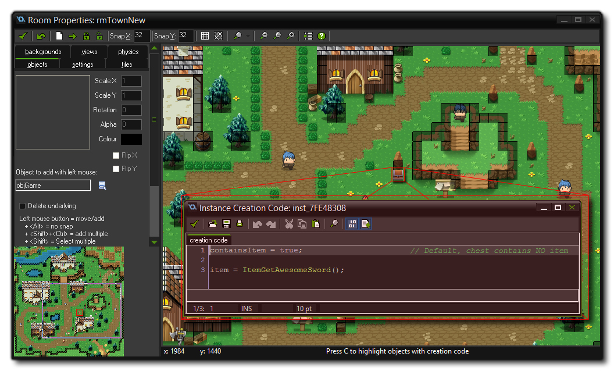

There are a number of scripts available to you to define items and weapons that your player character can use. These scripts are used to define the item properties and to assign sprite sets where
appropriate. For example, a weapon will require a sprite set for the various directions that it can be used in, but a quest item will not. note that these scripts are only for use with weapons or unique
items and any consumable item that can appear various times in the game (like a healing potion or a magic scroll) should be created as instances.
These scripts return arrays that are then used in the inventory and by the player to show what the player has or is currently using.
An item is defined using the script ItemGetDefine which returns an array of values that the instance can use for drawing etc... if you look at the Create Event of the object "objChest"
(in the "Interactables" object folder) you will see the script called like this:
item = ItemGetDefine("NO NAME", -1, 1, -1, -1, "NO DESCRIPTION", -1, 0, 0);
This simply initialises the chest "item" array, and the arguments that this script takes are as follows:
| argument | Description |
|---|---|
| name | The name of the item (a string) |
| type | The type of weapon that it is as defined by the given globalvar (-1 for no type, use one of the globalvars listed below otherwise) |
| count | The number of items to add |
| object | The object index to associate with this item (for when it is "dropped", see the globalvars below). |
| icon | The sprite index of the icon sprite for the item |
| description | The description of the item or weapon (a string) |
| spriteSet | The sprite-set to use for the item or weapon |
| effect | The magic effect that the sword has (currently can only be 1, or -1 for none) |
| value | The "gold" value of the item or weapon |
Note that there are a number of pre-defined item sets in the scripts folder, but they all define the same properties as above. The engine is adapted to use these individual scripts rather than the generic ItemGetDefine and we recommend that you create new scripts for each item rather than use the generic define as it will help keep your code clear and easy to follow. You can see an example of a pre-defined script being used in the Creation Code of one of the chests in the room editor:  Note that there are some globalvars defined as constants in the object "objConstants" which are used in the engine to set item types. These are:
| Globalvar | Description |
|---|---|
| ITEM_TYPE_WEAPON | Item is a weapon (will require a weapon set, see below). |
| ITEM_TYPE_PLACEABLE | The item is a placeable object (will require and object to be associated the function, see above) |
| ITEM_TYPE_POTION_HEALTH | A health potion |
If you are adding further items that can be used in the inventory, then you will have to create an item type for them, unless they can only be picked up and dropped (but not used) in which case you can use the
pre-defined globalvar.
The idea of weapon sets is that they provide an easy way to set up the sprites required by your player character for any weapon item that you choose to define in the game. The demo game has two weapons
defined for the player, but using the item scripts you can easily create more. Once you have defined the weapon, you will need to assign it a weapon set script for the engine to get the correct sprites for the
direction the player is facing.
You can find an example script in the "Weapon sets" folder of the scripts resources, and you can see that it takes four arguments, corresponding to the sprites required for the directions North, South, East and West.